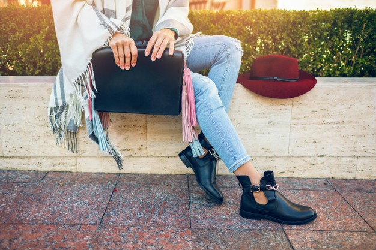

- Все новости
- Мужская обувь
- Женская обувь
- Детская обувь
- Акссесуары
- Уход
- FINAL SALE
- Новинки
Женская демисезонная обувь под джинсы: тренды 2022
20 августа 2022 Женская обувьДжинсы давно вышли из разряда рабочей одежды и стали предметом модного женского гардероба. Их носят круглый год, и именно поэтому брюкам пришлось уживаться не только со спортивной неброской обувью и вариантами из весенне-летних коллекций, но и с изящными женскими туфлями и сапогами. При этом правильно подобрать модель и тип изделий к джинсам (и наоборот) - весьма нелегкая задача, которая осложняется изменчивостью и крайним непостоянством женской моды.
Основные правила подбора модной обуви под джинсы
Модная обувь 2022 года сочетает в себе 2 основных критерия: лаконизм и универсальность. На пике моды оказались модели, в которых женщины чувствуют себя уверенно. Именно поэтому удобные и практичные:
- туфли различных моделей (лоферы, оксфорды, дерби, броги, слипоны),
- ботинки на низком ходу,
- полусапожки и ботильоны на каблуке,
а также неброские кеды или кроссовки стали лучшими вариантами для создания идеального лука весной и осенью.

Важную роль играет цветовая гамма и модель джинсов, цвет гардероба и обуви, а также гармоничность их сочетания. К джинсам можно подобрать изделия различных оттенков, но не стоит упускать из вида принцип сочетаемости верха одежды и аксессуаров. Также не нужно забывать о практичности, ведь в дождь белые и светлые туфли, сапоги или кроссовки будут смотреться крайне нелепо, тогда как изделия в сдержанной гамме станут отличным дополнением осеннего образа.
В слякоть и сырую погоду джинсы можно носить с резиновыми сапогами. Наиболее интересно они выглядят в сочетании с классическими моделями, хотя допускается надевать обувь такого типа с прочими облегающими фигуру моделями, имеющими зауженный крой штанин.
Как найти идеальный вариант демисезонной обуви
Абсолютно все демисезонные варианты, которые будут хорошо смотреться с джинсами и идеально впишутся в модный образ, можно условно разделить на несколько категорий. Основным критериями для классификации служат модель, материал верха и подошвы и цветовая гамма.
Пристальное внимание при выборе демисезонной обуви следует уделить:
- Типу материала верха и внутреннего слоя. Вне конкуренции осенняя обувь из натуральной кожи, ведь в ней будет комфортно даже в слякоть. Изделия из нубука более требовательны к погоде, но такие модели имеют более женственный вид. Внутренний слой (подкладка) в демисезонных вариантах должна быть выполнена из мягкой дышащей ткани, обладающей высокой степенью гигроскопичности. Именно поэтому при пошиве качественной обуви среди всех прочих вариантов материи производители выбирают натуральную байковую ткань (фланель).
- Типу, внешнему виду и высоте каблука. Среди ассортимента демисезонной обуви, которую носят модницы в 2022 году, присутствуют изделия на каблуке различной высоты и формы. Важно отметить, что правильно подобранный тип каблука и оптимальная высота делают походку плавной, и, что немаловажно, принуждают женщину держать правильную осанку.
- Типу подошвы. На пике моды сапоги и полусапожки на устойчивой «тракторной» подошве. В тренде 2022 года также отмечают обувь на низком ходу, но не выходят из моды и варианты на каблуке средней высоты. Полусапожки и туфли на высоком неустойчивом каблуке из-за непрактичности при создании модного образа используются все реже, хотя классические «лодочки» на шпильке в сочетании с джинсами скинни еще можно встретить в гардеробе многих городских модниц.
- Цветовой гамме. Большинство коллекций осеннего гардероба имеет сдержанные оттенки, а наиболее беспроигрышным вариантом к любому образу станет черная обувь. Внести нотку страсти в лук можно при помощи приглушенных красных тонов, а сделать облик менее заметным помогут изделия в классической коричневой гамме, а также синих и зеленых оттенках.
- Наличию супинатора. Подошва без упругой стальной вставки характеризуется излишней мягкостью. Именно поэтому если женщина будет носить обувь на «неправильной» подошве постоянно, то уже в ближайшем будущем она рискует столкнуться с проблемой плоскостопия, болезнями, вызванными смещением внутренних органов, и будет страдать от проявлений искривления позвоночника.
Важно научиться подобрать модель обуви, которая сумеет удовлетворить все запросы. Для этого следует оценить внешний вид изделия, а также убедиться, что обувь будет удобной и практичной в носке. В последнее время предпочтение отдается универсальным изделиям, носить которые весной и осенью можно не только с брюками, но и юбками и платьями.
Оптимально иметь в запасе несколько разновидностей туфель и ботинок. Это позволит легко и часто менять образ, не выходя за рамки одного стиля, а также гарантирует, что в любой день удастся быть одетой по погоде и настроению.
Особенности выбора спортивной обуви
Обувь на подошве спортивного типа отлично сочетается с классическими вариантами джинсов, а также гармонично смотрится с брюками с широкими штанинами. Подбирая обувь, следует обратить внимание на:
- Материал верха. Качественная кожаная осенняя обувь спортивного типа легко впишется в кэжуал стиль. Изделия из натуральных материалов смотрятся дорого и не подведут в неподходящий момент. Именно поэтому при покупке нужно отдавать предпочтение изделиям из кожи. Обувь с текстильным верхом и изготовленную из кожзаменителей можно надевать теплой весной, ведь такие изделия не способны хорошо согреть ноги и сохранить тепло тела.
- Подошву. Лучшим материалом для изготовления подошвы во все времена считался полиуретан. Этот материал обладает качествами, гарантирующими высокую износостойкость обуви. Наряду с полиуретаном используется множество других материалов, не уступающих ему по характеристикам, и сегодня можно обратить внимание на изделия, подошва в которых изготовлена из термопластичных эластомеров. В такой обуви обладательнице никогда не будет холодно или скользко.
- Цветовую гамму. Спортивные варианты обуви, которая выгодно смотрится с джинсами, зачастую ограничивается моделями в неброских тонах. Но даже среди небольшого ассортимента всегда можно найти модные коричневые, серые, красные, синие, а также классические черные или белые кроссовки.
В большинстве модных коллекций демисезонные изделия в спортивном стиле представлены несколькими разновидностями кроссовок и слипонами. Такие варианты удобны для ежедневного использования, но носить каждый день их не рекомендуется. Основной причиной является отсутствие супинатора. И поэтому всем женщинам, которые любят джинсы и считают их предметом №1 своего гардероба, не получится обойтись без приобретения пары в классическом стиле.
Беспроигрышные сочетания
В тренде 2020 года демисезонные ботильоны и полусапожки на низком ходу или устойчивом каблуке средней высоты. В приоритете классический черный цвет, а также изделия в красной, синей, зеленой и коричневой гамме. Выбор той или иной модели обуви зависит от индивидуальных особенностей фигуры женщины, образа и предпочтительного стиля, а также от типа самих джинсов.
Проще всего подобрать обувь к классическим моделям брюк, ведь с ними идеально смотрятся как ботильоны, так и кожаные мокасины, лоферы, дерби и прочие разновидности демисезонной обуви. К классическим брюкам можно покупать варианты на каблуке различной высоты, толщины и типа.
Классические джинсы часто носят с осенними моделями сапог с высотой голенища до середины икры. Цветовая гамма изделий может варьироваться. Наименее выигрышно с джинсами смотрятся яркие модели с цветочным мотивом или орнаментом, тогда как варианты с преобладанием черного, коричневого, синего и темно-зеленого цвета по-прежнему в тренде.
Брюки скинни, которые идеально сидят на женщинах с правильными пропорциями тела, хорошо сочетаются с сапогами, высота голенищ в которых достигает колена, а также подходят к обуви в спортивном стиле. Красиво смотрятся сапоги-ботфорты черного и коричневого цвета, а также варианты болотно-зеленого и синего оттенков. Зауженные модели джинсовых брюк в классической цветовой гамме можно сочетать с белыми кедами и прочей обувью в спортивном стиле, главным отличием которой является минимум декоративных элементов.
Джинсы, отличающиеся глубокой посадкой, широким верхом и зауженными к низу холошами, часто сочетают с ботинками на шнуровке. Несмотря на кажущуюся несовместимость, джинсы-«бананы» носят не только демисезонной обувью на низкой подошве, но и надевают с изящными остроносыми полуботинками на шпильках.
Вошедшие в моду джинсы-шаровары, которые одинаково хорошо сидят на женщинах различного телосложения, предпочтительно сочетать с моделями в спортивном стиле. В теплые осенние вечера и весной к такой одежде можно надеть туфли с округлым носком. Ввиду того, что акцент в наряде делается на брюки, верх гардероба и обувь должны иметь минимум привлекающих взгляд деталей.
Полусапожки различного кроя с минимальной высотой голенища идеально дополнят зауженные и укороченные модели джинсов. Сапожки в ковбойском стиле в сочетании с кожаным верхом гардероба позволят подчеркнуть индивидуальность женщины и укажут на ее уверенность и смелость.
Цикличность моды вернула спрос на расклешенные джинсы. Такая разновидность брюк идеально смотрится с демисезонной обувью без каблука или громоздкими туфлями на рифленой подошве. К клешеным джинсам можно купить кроссовки и полусапожки на толстом устойчивом каблуке. К брюкам, низ холош в которых оформлен бахромой, можно надеть кеды. Теплой весной клеши можно дополнить мокасинами из мягкой кожи.
Неподходящая обувь, или с чем не стоит сочетать джинсы
К джинсам нестандартного цвета обувь следует подбирать очень внимательно. Важно найти изделия, которые подчеркнут изысканность гардероба и не станут ярким пятном. Многие дизайнеры и модельеры сходятся во мнении, что комплекты с джинсами точно так, как и варианты всех прочих костюмов, должны содержать не более трех цветов, которые могут хорошо сочетаться между собой.
Джинсы черного цвета можно дополнить белой, красной обувью или изделиями в тон одежде. С брюками в светлой гамме будут хорошо смотреться коричневые боты, а также варианты в сине-зеленой гамме. Светлые джинсы можно сочетать с обувью в пастельных тонах. Брюки с большим количеством декоративных элементов сами по себе привлекают внимание окружающих. Именно на них падает акцент в образе, и поэтому подобный наряд целесообразно дополнять неброской обувью.
Несмотря на то, что на подиумах многих модных домов нередко можно увидеть сочетания джинсовых брюк и кружевной обуви, слишком вычурные сапоги и туфли надевать с джинсами неуместно. Разве что только создательница необычного образа не ставит перед собой цель войти в историю моды как самая эпатажная женщина города.
Яркие туфли или ботинки в теплых тонах очень хочется обуть весной, но, выбирая такой вариант, нужно иметь в гардеробе брюки с минимумом декоративных элементов. Выбранный оттенок обуви следует продублировать в верхней одежде, аксессуарах или головном уборе. При отсутствии соответствующих вещей или неготовности привлекать к себе внимание от приобретения туфель или ботинок нестандартного цвета лучше отказаться.
Также при подборе обуви к джинсам следует учитывать особенности собственной фигуры. Надевать джинсы и сапоги или туфли на тонком высоком каблуке могут стройные женщины среднего роста.
Женщинам невысокого роста не стоит носить джинсы с кедами, мокасинами или лоферами, и во много раз лучше присмотреться к моделям на платформе или отдать предпочтение вариантам невысоком квадратном или треугольном каблуке. При создании образа в спортивном стиле лучше остановить свой выбор на кроссовках. Высоким девушкам рекомендуется остановить свой выбор на ботинках и туфлях на плоской подошве или вариантах в спортивном стиле, а вот обладательницам фигуры Венеры будет комфортно в коттоновых брюках, дополненных обувью на устойчивом классическом каблуке средней высоты.
Выбранная модель обуви должна гармонично вписываться в уже имеющийся гардероб. При покупке обуви без примерки следует пользоваться размерной таблицей, предложенной производителем или продавцом, а также внимательно читать описание товара.
Купить качественные и модные осенние сапоги, демисезонные туфли или спортивную обувь, которая будет отлично сочетаться с любимыми джинсами, сегодня можно в интернет-магазине обувной фабрики «Мида». Простой и удобный каталог, в котором можно найти изделия по заданным параметрам, облегчит поиск нужной модели. Оформить заказ на приобретение женских туфель, ботинок, полусапожек или модной спортивной обуви можно при помощи стандартной опции «Корзина».
Получить ответы на все вопросы, которые возникли в ходе выбора изделий или оформления покупки нужного товара, можно по телефонам 0-800-211-216 или + 38 (044) 363-12-16. Для быстрой связи с консультантами рекомендуем воспользоваться функцией заказа обратного звонка или формой для общения онлайн.
На весь модельный ряд демисезонных изделий, представленных на официальном сайте обувной фабрики «Мида», распространяется гарантия производителя.
Комментарии
Кроссовки идеально подходят как для ходьбы каждый день так и для бега. Лёгкие дышащие. Подошва хорошо амортизирует и не ноги не устают даже после длительной ходьбы или бега
Катерина 13.06.2023
Кроссовки идеально подходят как для ходьбы каждый день так и для бега. Лёгкие дышащие. Подошва хорошо амортизирует и не ноги не устают даже после длительной ходьбы или бега
Катерина 13.06.2023
Кроссовки идеально подходят как для ходьбы каждый день так и для бега. Лёгкие дышащие. Подошва хорошо амортизирует и не ноги не устают даже после длительной ходьбы или бега
Катерина 13.06.2023
Кроссовки идеально подходят как для ходьбы каждый день так и для бега. Лёгкие дышащие. Подошва хорошо амортизирует и не ноги не устают даже после длительной ходьбы или бега
Катерина 13.06.2023